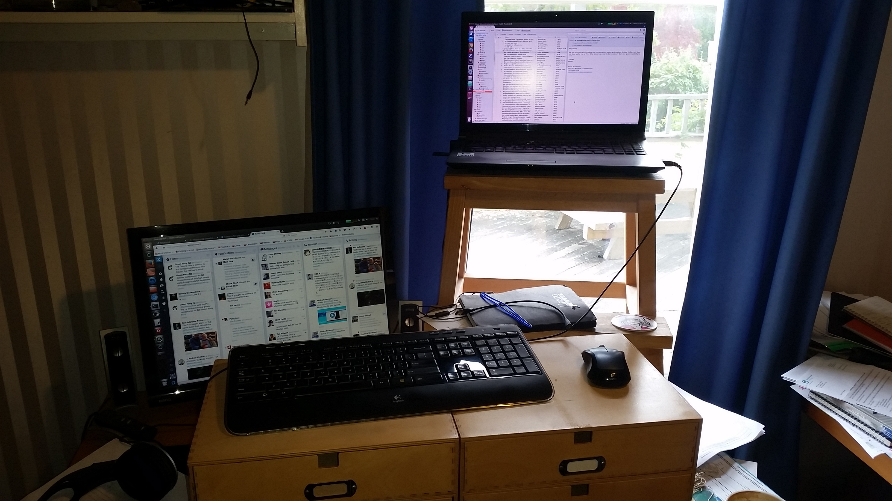

Remote Working
Working from home
Code Craft
We meet here the first Tuesday of the month.
Meetings are organised on meetup.com.
The mailing list is hosted on google groups.
Let us know what you want to hear about.
Meta
This presentation uses reveal.js.
Also on github howbazaar/remote-work.
My new favourite way to write talks.
About Tim
- Work for Canonical remotely
- Head office is in London, UK
- About 70% of the employees work from home
- Been doing this for over 9 years now
About Tim
- Team Lead on Juju, open source Go project
- Now have eight direct reports
- NZ, Australia, UK, and Bulgaria
- Manager is in the USA
Distributed Teams
Working from home ≠ distributed team.
You at home vs all distributed.
I'm talking about distrubuted teams
Reality
- Need "office" space
- This is where you work most of the time
- Flexi-time, 1.5 hour lunches for gym
- Results driven not hours driven
My office
Working Hours
- Each person is expected to have predictable hours
- Most people work 8 - 5, 9 - 6 or some variation
- Very easy to overwork
- Time in an office isn't all productive
Communication
- IRC - old school, freenode and company private
- Hangouts - 1:1 calls, and team calls
- Twitter, Facebook, Google+
- Phone conference when talking with customers
- Oh, yeah, and heaps of e-mail
Normal Days - 9am team call
- 9am NZ time, 7am Sydney
- Talk through what we are doing
- Not really a stand-up, more chat
- Doesn't include Europeans, they are still new to me
Weekly
- 30 minute 1:1 call with each team member
- 1 hour team call
- 1 hour 1:1 call with my manager
- Several calls with peers
Six Monthly
- 1 week sprint with big boss feature planning
- 1 week sprint with the team
Working...
- Calls each morning
- Often other calls through the day
- Keep on top of email
- Be responsive on IRC
- And add features or fix bugs
Developing Features
- Break it down into codeable chunks
- Rough estimates, most people are bad at this
- Develop locally on your laptop
- Always have tests
- Code reviews
Master your tools
- Whichever editor you use, learn it well
- Know git well enough to get yourself out of trouble
- Command line tools are worth knowing, find, xargs, grep
When you get stuck
Take the dog for a walk

Worth noting
Kids don't care who you are talking to
It isn't for everyone
- Most your friends are virtual
- Can feel lonely
- Miss the water cooler chatter
- Must have social life outside of work